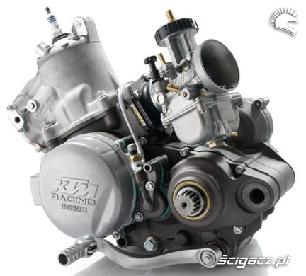

<!DOCTYPE html>
    <html lang="en">
    <head>
        <meta charset="UTF-8">
        <meta name="viewport" content="width=device-width, initial-scale=1.0">
        <link rel="preconnect" href="https://fonts.googleapis.com">
    <link rel="preconnect" href="https://fonts.gstatic.com" crossorigin>
<link href="https://fonts.googleapis.com/css2?family=Parkinsans:wght@300..800&display=swap" rel="stylesheet">
        <link rel="stylesheet" href="style.css">
    </head>
    <body>
       
    

    </body>
    </html>
   
<h2>Thriatlon</h2>
<p align="center"></p>


Thriatlon to dyscyplina sportowa uznawana za jedna znajciezszych dyscyplin dla serca oraz pluc sklada sie z plywania biegania oraz roweru.Jest to poswiecenie dla naszego czasu poniewaz oraz pieniedzy,poniewaz trenowanie 3 dyscyplin wymaga duzego poswiecenia poniewaz trenowanie 3 dyscyplin jest czasochlony oraz kosztowny.</p>

<p>Od 14 życia mozna wystepowac w zawodach thriatlonowyc oraz jednak jeśli jestesmy pelnoletni mamy duzo pieniedzy oraz jestesmy dobrzy w naszym sporcie mozemy jezdzic na swiatowej </p>


<p>Jest to jedna z najzdrowszych dyscyplin,poniewaz nasze serce oraz płuca są w szczycie swojej wydolnosci bez negatywnych skutkow ubocznych 
    co praktycznie uniemozliwia wystepowanie klasy zawody np w emilia romagna(zdjęcie powyżej)></p>


<p>Sport ten to bardzo dobry sposób na zapobieganie chorobom  serca ora płuc.Koszty tego sportu są barzo zróżnicowane,ale nie jest to mała kwota,ponieważ sprzęt do 3 sportów kosztuje.

    <p align="center"></p>

 
    


<body>
</html>

    

